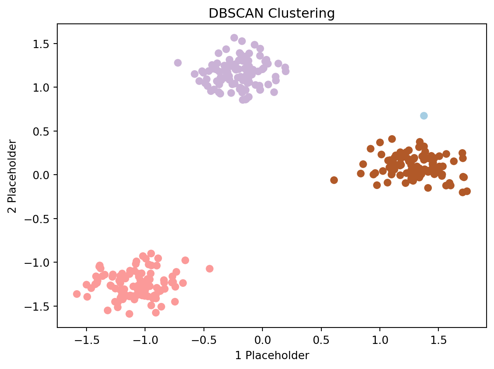
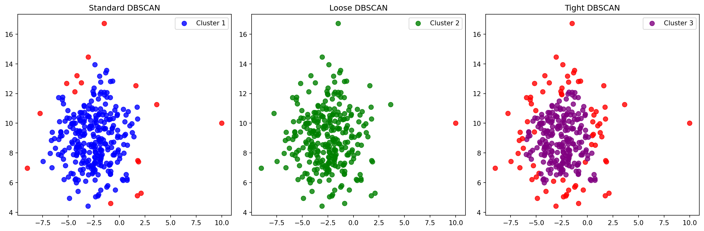

Detecting Anomalies with Machine Learning: A Python Approach
Anomalies, often referred to as outliers, are data points that significantly differ from the rest of the data. In the realm of Machine Learning (ML), anomaly detection is a critical process, especially in domains like fraud detection, system health monitoring, and intrusion detection. The power of ML in anomaly detection lies in its ability to learn from data and identify patterns that may not be immediately obvious to the human eye.
Identifying unusual patterns or data points that deviate significantly from the expected norm.
A critical task in machine learning for detecting errors, irregularities, or rare occurrences within a dataset.
Objective:
Uncover anomalies that may indicate potential issues, fraud, or outliers in the data.
Enhance data quality and reliability by flagging unexpected observations.
Common Use Cases:
Fraud detection in financial transactions.
Monitoring system logs for unusual behavior.
Identifying defective products in manufacturing processes.
Approaches to Anomaly Detection:
Supervised Learning: Requires labeled data with both normal and anomalous examples for training.
Unsupervised Learning: Utilizes algorithms to identify anomalies without labeled data.
Semi-Supervised Learning: Combines aspects of both supervised and unsupervised methods.
DBSCAN (Density-Based Spatial Clustering of Applications with Noise):
A popular unsupervised algorithm for detecting anomalies based on data density.
Groups together points in dense regions and flags points in sparse regions as anomalies.
Parameters:
eps (ε): The distance within which points are considered neighbors.
minPts: The minimum number of points required to form a dense region.
Importance:
Helps maintain data integrity by identifying unusual patterns.
Provides insights into potential issues or rare events that may require attention.
Anomaly outlier detection is a crucial aspect of data analysis, ensuring that abnormal patterns are identified and addressed, contributing to overall data quality and decision-making processes.
Advantages of Machine Learning in Anomaly Detection
Efficiency: ML models can process large datasets much faster than manual methods.
Accuracy: Advanced algorithms are highly effective at distinguishing between normal and abnormal patterns.
Adaptability: ML models can be trained to adapt to new, previously unseen types of anomalies.
Scalability: These models can scale with the data, making them suitable for large-scale applications.
Practical Example: Anomaly Detection with DBSCAN in Python
Below is a Python code example demonstrating anomaly detection using the DBSCAN algorithm with a publicly available dataset. This code covers the entire process from data loading to visualization.
Code
import pandas as pdimport numpy as npimport matplotlib.pyplot as pltfrom sklearn.cluster import DBSCANfrom sklearn.preprocessing import StandardScalerfrom sklearn.datasets import make_blobs# Import Libraries and Create Sample Data# Here we are using 'make_blobs' to create a sample dataset for demonstration.data, _ = make_blobs(n_samples=300, centers=3, cluster_std=1.0, random_state=42)# Data Preprocessing# Standardizing the data for better performance of the DBSCAN algorithmscaler = StandardScaler()scaled_data = scaler.fit_transform(data)# Applying DBSCAN for Anomaly Detection# Here, 'eps' and 'min_samples' are key parameters and might need tuning based on your datasetdbscan = DBSCAN(eps=0.3, min_samples=10)clusters = dbscan.fit_predict(scaled_data)# Visualizing the Results# Scatter plot to visualize the data points and the identified anomaliesplt.scatter(scaled_data[:, 0], scaled_data[:, 1], c=clusters, cmap='Paired')plt.title('DBSCAN Clustering')plt.xlabel('1 Placeholder')plt.ylabel('2 Placeholder')plt.show()

Code
import numpy as npimport matplotlib.pyplot as pltfrom sklearn.cluster import DBSCANfrom sklearn.datasets import make_blobs# Create synthetic dataset with outliersdata, labels = make_blobs(n_samples=300, centers=1, random_state=42, cluster_std=2)outliers = np.array([[10, 10]])# Add outliers to the datasetdata = np.concatenate([data, outliers])# Apply different types of DBSCANdbscan_standard = DBSCAN(eps=1, min_samples=5)dbscan_loose = DBSCAN(eps=3, min_samples=5)dbscan_tight = DBSCAN(eps=0.5, min_samples=5)labels_standard = dbscan_standard.fit_predict(data)labels_loose = dbscan_loose.fit_predict(data)labels_tight = dbscan_tight.fit_predict(data)# Define labels for different colorscolors_standard = ['red'if label ==-1else'blue'for label in labels_standard]colors_loose = ['red'if label ==-1else'green'for label in labels_loose]colors_tight = ['red'if label ==-1else'purple'for label in labels_tight]# Plot side-by-side graphsplt.figure(figsize=(15, 5))# Plot Standard DBSCANplt.subplot(1, 3, 1)plt.scatter(data[:, 0], data[:, 1], c=colors_standard, s=50, alpha=0.8, label='Cluster 1')plt.title('Standard DBSCAN')plt.legend()# Plot Loose DBSCANplt.subplot(1, 3, 2)plt.scatter(data[:, 0], data[:, 1], c=colors_loose, s=50, alpha=0.8, label='Cluster 2')plt.title('Loose DBSCAN')plt.legend()# Plot Tight DBSCANplt.subplot(1, 3, 3)plt.scatter(data[:, 0], data[:, 1], c=colors_tight, s=50, alpha=0.8, label='Cluster 3')plt.title('Tight DBSCAN')plt.legend()plt.tight_layout()plt.show()

This Python code creates a synthetic dataset with outliers and applies three different types of DBSCAN with varying epsilon values. The resulting clusters and outliers are visualized in side-by-side graphs. Adjust parameters and data as needed for your specific use case.
Conclusion
Anomaly detection using ML offers a robust and scalable approach to identifying outliers in large datasets. The DBSCAN algorithm, with its emphasis on density-based clustering, proves to be a practical choice for such tasks. As with any ML model, the key to success lies in proper data preprocessing and parameter tuning. Embracing these techniques can significantly enhance the effectiveness of your anomaly detection tasks.
Source Code
---title: "6\\. Anomaly Outlier Detection"author: "M Mubashar Ashraf"date: "2023-11-20"categories: [Anomaly Detection, ML]output: html_documentimage: "AD.png"format: html: code-fold: truejupyter: python3code-fold: truekeep-ipynb: true---# Detecting Anomalies with Machine Learning: A Python ApproachAnomalies, often referred to as outliers, are data points that significantly differ from the rest of the data. In the realm of Machine Learning (ML), anomaly detection is a critical process, especially in domains like fraud detection, system health monitoring, and intrusion detection. The power of ML in anomaly detection lies in its ability to learn from data and identify patterns that may not be immediately obvious to the human eye.- Identifying unusual patterns or data points that deviate significantly from the expected norm.- A critical task in machine learning for detecting errors, irregularities, or rare occurrences within a dataset.**Objective:**- Uncover anomalies that may indicate potential issues, fraud, or outliers in the data.- Enhance data quality and reliability by flagging unexpected observations.**Common Use Cases:**- Fraud detection in financial transactions.- Monitoring system logs for unusual behavior.- Identifying defective products in manufacturing processes.**Approaches to Anomaly Detection:**- **Supervised Learning:** Requires labeled data with both normal and anomalous examples for training.- **Unsupervised Learning:** Utilizes algorithms to identify anomalies without labeled data.- **Semi-Supervised Learning:** Combines aspects of both supervised and unsupervised methods.**DBSCAN (Density-Based Spatial Clustering of Applications with Noise):**- A popular unsupervised algorithm for detecting anomalies based on data density.- Groups together points in dense regions and flags points in sparse regions as anomalies.**Parameters:**- **eps (ε):** The distance within which points are considered neighbors.- **minPts:** The minimum number of points required to form a dense region.**Importance:**- Helps maintain data integrity by identifying unusual patterns.- Provides insights into potential issues or rare events that may require attention.Anomaly outlier detection is a crucial aspect of data analysis, ensuring that abnormal patterns are identified and addressed, contributing to overall data quality and decision-making processes.## Advantages of Machine Learning in Anomaly Detection1. **Efficiency**: ML models can process large datasets much faster than manual methods.2. **Accuracy**: Advanced algorithms are highly effective at distinguishing between normal and abnormal patterns.3. **Adaptability**: ML models can be trained to adapt to new, previously unseen types of anomalies.4. **Scalability**: These models can scale with the data, making them suitable for large-scale applications.## Practical Example: Anomaly Detection with DBSCAN in PythonBelow is a Python code example demonstrating anomaly detection using the DBSCAN algorithm with a publicly available dataset. This code covers the entire process from data loading to visualization.```{python}import pandas as pdimport numpy as npimport matplotlib.pyplot as pltfrom sklearn.cluster import DBSCANfrom sklearn.preprocessing import StandardScalerfrom sklearn.datasets import make_blobs# Import Libraries and Create Sample Data# Here we are using 'make_blobs' to create a sample dataset for demonstration.data, _ = make_blobs(n_samples=300, centers=3, cluster_std=1.0, random_state=42)# Data Preprocessing# Standardizing the data for better performance of the DBSCAN algorithmscaler = StandardScaler()scaled_data = scaler.fit_transform(data)# Applying DBSCAN for Anomaly Detection# Here, 'eps' and 'min_samples' are key parameters and might need tuning based on your datasetdbscan = DBSCAN(eps=0.3, min_samples=10)clusters = dbscan.fit_predict(scaled_data)# Visualizing the Results# Scatter plot to visualize the data points and the identified anomaliesplt.scatter(scaled_data[:, 0], scaled_data[:, 1], c=clusters, cmap='Paired')plt.title('DBSCAN Clustering')plt.xlabel('1 Placeholder')plt.ylabel('2 Placeholder')plt.show()``````{python}import numpy as npimport matplotlib.pyplot as pltfrom sklearn.cluster import DBSCANfrom sklearn.datasets import make_blobs# Create synthetic dataset with outliersdata, labels = make_blobs(n_samples=300, centers=1, random_state=42, cluster_std=2)outliers = np.array([[10, 10]])# Add outliers to the datasetdata = np.concatenate([data, outliers])# Apply different types of DBSCANdbscan_standard = DBSCAN(eps=1, min_samples=5)dbscan_loose = DBSCAN(eps=3, min_samples=5)dbscan_tight = DBSCAN(eps=0.5, min_samples=5)labels_standard = dbscan_standard.fit_predict(data)labels_loose = dbscan_loose.fit_predict(data)labels_tight = dbscan_tight.fit_predict(data)# Define labels for different colorscolors_standard = ['red'if label ==-1else'blue'for label in labels_standard]colors_loose = ['red'if label ==-1else'green'for label in labels_loose]colors_tight = ['red'if label ==-1else'purple'for label in labels_tight]# Plot side-by-side graphsplt.figure(figsize=(15, 5))# Plot Standard DBSCANplt.subplot(1, 3, 1)plt.scatter(data[:, 0], data[:, 1], c=colors_standard, s=50, alpha=0.8, label='Cluster 1')plt.title('Standard DBSCAN')plt.legend()# Plot Loose DBSCANplt.subplot(1, 3, 2)plt.scatter(data[:, 0], data[:, 1], c=colors_loose, s=50, alpha=0.8, label='Cluster 2')plt.title('Loose DBSCAN')plt.legend()# Plot Tight DBSCANplt.subplot(1, 3, 3)plt.scatter(data[:, 0], data[:, 1], c=colors_tight, s=50, alpha=0.8, label='Cluster 3')plt.title('Tight DBSCAN')plt.legend()plt.tight_layout()plt.show()```This Python code creates a synthetic dataset with outliers and applies three different types of DBSCAN with varying epsilon values. The resulting clusters and outliers are visualized in side-by-side graphs. Adjust parameters and data as needed for your specific use case.## ConclusionAnomaly detection using ML offers a robust and scalable approach to identifying outliers in large datasets. The DBSCAN algorithm, with its emphasis on density-based clustering, proves to be a practical choice for such tasks. As with any ML model, the key to success lies in proper data preprocessing and parameter tuning. Embracing these techniques can significantly enhance the effectiveness of your anomaly detection tasks.